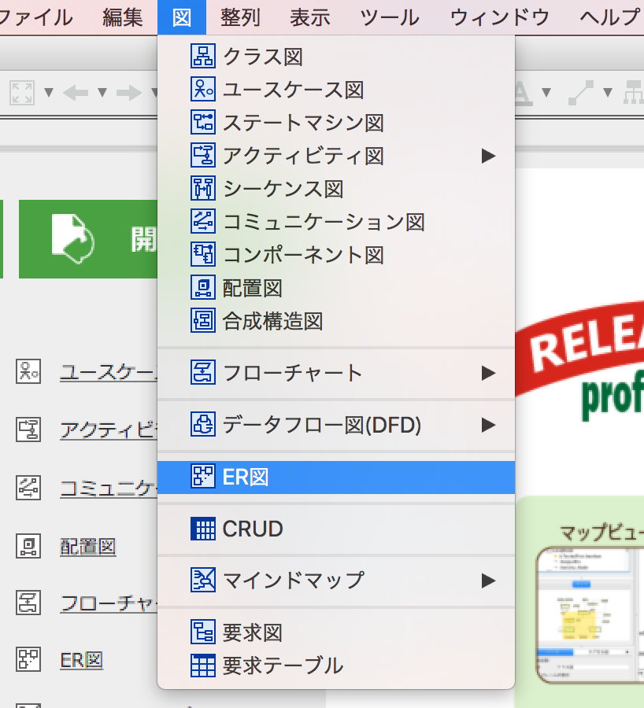
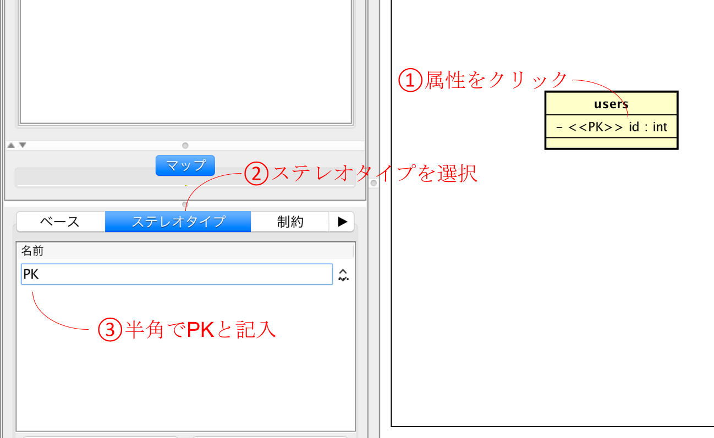
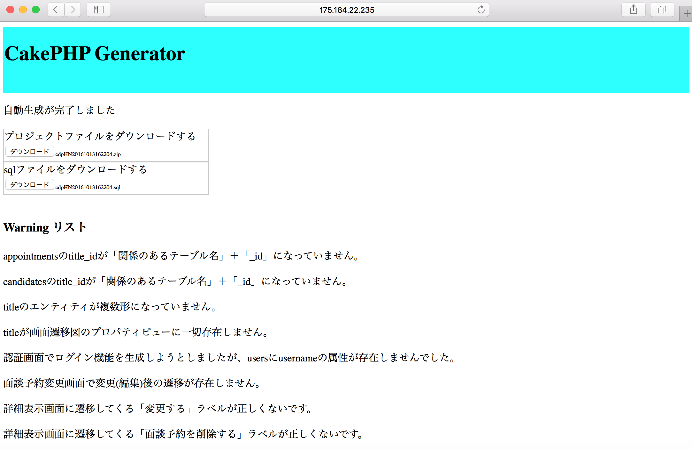

CakePHP
Generatorのドキュメント
目次
概要
1.
ER図の作成
•
基本的な記入方法
•
属性の設定
2.
クラス図の作成
•
基本的な記載方法
•
クラスの作成
•
属性の編集
•
その他
3.
画面遷移図の作成
•
基本的な記述方法
•
各機能の作成
•
一覧表示機能
•
登録機能
•
削除機能
•
詳細表示機能
•
編集機能
•
全削除機能
•
履歴表示機能
•
ログイン機能
•
登録確認機能
•
地図表示機能
4.
自動生成
7.
Google Maps API のAPI_KEYを取得する
参考資料
概要
モデリングツールastah*で作成した画面遷移図とER図から、CakePHPのソースコードを自動生成することができるツール。ER図の代わりにクラス図を用いてもよい。
astah
professionalを使って、画面遷移図とER図(あるいはクラス図)を作る。このとき画面遷移図とER図(クラス図)のプロジェクトファイルは一緒にしても、分けてもよいが、作成する画面遷移図とER図(クラス図)は1つだけにしておく。画面遷移図はER図(クラス図)との対応付けを行う必要があるため、先にER図(クラス図)を作成するのをおすすめする。ER図とクラス図が同じプロジェクトに存在した場合、ER図のほうが優先されて読み込まれる。
1. ER図の作成
ER図はastah*のER図作成ツールを使って作成を行う。astah*を開き、ER図を選択する。

ER図はエンティティと依存型リレーションシップのみを使って記入を行う。テーブルを作成する場合はエンティティを使って作成を行い、テーブル同士の関係は依存型リレーションシップを使って作成を行う。なお、本ツールは多対多の関係は現段階では対応していない。
エンティティを作成し、テーブル名を複数形で記入する。このとき「単数形」+「s」という形になるようにする。
例：studyの場合、studysと記入する。
属性には主キーとして必ず「id」を作成する。
依存型リレーションシップのボタンを押し、親テーブルから子テーブルに向けて線を引く。外部キーは「親テーブルの単数形」＋「_id」という形になるようにする。下図の場合、usersテーブルが1(親)、appointmentsテーブルが多(子)という形になっている。
各属性をクリックすると、プロパティビューが表示され、カラムの設定を行うことができる。本ツールに対応しているのは「NOT NULL」や、「データ型」、「長さ」の3つである。この3つの記入は必須ではない。NOT NULLにチェックを入れると、バリデーション（フォームの入力項目を入力必須にする）を設定できる。また、データ型に「data」、あるいは「DATETIME」を指定すると、フォームの入力を行うときに、選択ボックス形式で日付の入力を行うことができる。
ログイン機能を利用する場合、ログイン時に使うID（主キーのidではない）を「username」とし、パスワードを「password」というカラム名に必ずする。上図のusersエンティティを参考にすること。クラス図の場合も同様にクラスの属性に「username」と「password」カラムを追加しておく。
エンティティやリレーションシップを削除するときは、「図から削除」ではなく、「モデルから削除」を選んで削除を行う。「図から削除」を選択した場合、プロジェクトファイルから完全に消えるわけではないので、注意すること。クラス図も同様にして削除する。
ER図を作成しない場合、クラス図を作成する。astah*を開き、クラス図を選択する。
クラス図はクラスと集約(あるいはコンポジション)を使って作成を行う。テーブルを作成する場合はクラスを使って作成を行い、テーブル同士の関連は集約(コンポジション)を使って作成を行う。なお、本ツールは多対多の関係は現段階では対応していない。
クラスを作成し、テーブル名を複数形で記入する。このとき「単数形」+「s」という形になるようにする。
例：studyの場合、studysと記入する。
主キーとして必ず「id」の属性を作成し、ステレオタイプに「PK」(Primary Keyの意)を記入しておく。

集約(コンポジション)のボタンを押し、親テーブルから子テーブルに向けて線を引く。外部キーとして「親テーブルの単数形」＋「_id」を作成しておく。また、外部キーのステレオタイプには「FK」(Foreign Keyの意)を追加しておく。下図の場合、usersテーブルが親(1)でappointmentsテーブルが子(多)の関係になっている。
各属性をクリックすると、プロパティビューが表示され、ベースをクリックするとカラムの設定を行うことができる。本ツールに対応しているのは「NOT NULL」や、「データ型」、「長さ」の3つである。クラス図の場合、データ型を必ず入力する必要があるので、必ず入力しておく。現在対応しているのは「int」、「char」、「varchar」、「date」、「datetime」型であり、「型になる****を新規作成しますか？」と聞かれた場合は作成を行う。データ型に「date」、あるいは「datetime」を指定すると、フォームの入力を行うときに選択ボックス形式で日付の入力を行うことができる。初期値にnullを入れておくと、そのカラムは入力必須ではなくなり、何も入れないでおくとバリデーション（フォームの入力項目を入力必須にする）が設定される。データの長さは「定義」の項目に記入しておく。
ログイン機能に関してはER図の「ログイン機能に関して」、クラスの削除に関してはER図の「削除を行うときの注意点」を参照すること。
画面遷移図はステートマシン図を基に作成を行う。astah*を開き、図の新規作成からステートマシン図の作成を選択する。
ステートマシン図は必ず開始擬似状態を1つだけ書き、トップページにしたい画面に遷移するように記述する。開始疑似状態の名前はデフォルトのままにしておく。画面は必ず「状態」を使って記入し、画面遷移は、「遷移」を使って記入をする。この3つのボタンを使って画面遷移図を作成していく。下図にそれぞれのボタンの位置を示しておく。
各遷移をクリックすると左下のプロパティビューの領域にトリガーの項目が現れる。単純な画面遷移の場合はトリガーに「遷移する」と入れる。機能によって画面遷移が発生する場合は、トリガーは各機能の説明を参照して記入すること。なお、機能によって画面遷移が発生する場合は、必ず同じテーブルを使った画面に遷移するようにする。テーブルとの対応付けは下記のER図との対応付けを参照すること。
•
ER図(クラス図)との対応付け
画面の作成を行うときはER図(クラス図)との対応付けを行うために、各画面のプロパティビューの定義部分に必ずテーブル名を記入しておく。各画面をクリックすると、左下にプロパティビューが表示されるため、そこに対応するテーブル名を記述する。例えば「ユーザ情報一覧表示画面」と画面を作成し、その画面が「users」テーブルを使うならば、定義部分には「users」と記入しておく。ただのホーム画面のように、テーブルを利用しない画面でも、「homes」などの名前を書いておく。
各機能は画面遷移図の画面名に機能名を記入しておくと自動生成される。例えば「ユーザ情報一覧表示画面」を作成した場合、ツールは「一覧」の部分を読み取る仕組みになっている。
一覧表示機能は画面名に「一覧」の単語が含まれていたら自動生成される。テーブルの中身を一覧表示してくれる。
登録機能は画面名に「登録」、「追加」、「保存」、「作成」のいずれかの単語が含まれていたら自動生成される。登録を行ったときの遷移を記入する場合は、トリガーに「登録する」などを記入しておく。キャンセルボタンを設置したい場合は、遷移のトリガーに「キャンセル」の単語を含ませておく。登録後とキャンセル後の遷移先が同じ場合は、2本の遷移を記入しても、1本にまとめて「登録するorキャンセルする」などと記入を行ってもよい。
削除機能は一覧表示画面、あるいは詳細表示画面を作成し、そこから遷移を作成し、そのトリガーに「削除」が含まれていたら自動生成される。詳細表示画面に削除遷移を作成する場合は遷移先に自身を(循環するように)作成してはいけない。
詳細表示機能は画面遷移図の画面名に「詳細」の単語が含まれていたら自動生成される。詳細表示機能は関係のあるテーブルの中身も全て表示してくれる。詳細表示画面は必ず登録機能の画面、あるいは一覧表示機能の画面、あるいは編集機能の画面から遷移するように作成する。登録画面から遷移する場合はトリガーに「登録する」などを記入し、一覧表示画面から遷移する場合はトリガーに「詳細」を含めておき、編集画面から遷移する場合はトリガーに「完了」を含めておく。
編集機能は画面遷移図の画面名に「編集」あるいは「変更」の単語が含まれていたら自動生成される。編集画面は必ず一覧表示機能の画面、あるいは詳細表示の画面から遷移するように作成する。編集後の遷移はトリガーに「完了」を必ず入れておく
全削除機能は画面遷移図の画面名に「全削除」の単語が含まれていたら自動生成される。テーブルの中身が全削除される。全削除を行った後の遷移を記入する場合は、トリガーに「全削除」の単語を含ませておく。キャンセルボタンを設置する場合は、遷移のトリガーに「キャンセル」の単語を含ませておく。全削除後とキャンセル後の遷移先が同じ場合は、2本の遷移を記入しても、1本にまとめて記入を行ってもよい。
履歴表示機能は画面遷移図の画面名に「履歴」の単語が含まれていたら自動生成される。自テーブル、あるいは関連するテーブルのカラムにDATE、あるいはDATETIME型のカラムがあったらそれを参考に、現在より前の日付データを一覧表示する。そのカラムがなかったら、履歴表示はただの一覧表示になる。DATE、DATETIME型が2つあった場合は先に見つかったほうになる。
ログイン機能は画面遷移図の画面名に「ログイン」、「認証」のいずれかの単語が含まれていたら自動生成される。ログインした後の遷移を記入する場合はトリガーに「ログイン」等の単語を含ませておく。ログイン機能はER図(クラス図)も調整を行う必要がある。詳細はER図の「ログイン機能に関して」の項目を参照。なお、ログイン機能はログインを行うための情報を登録する必要があるため、登録画面へ遷移できるようにする。
画面遷移図の画面名に「登録」、「追加」、「作成」、「保存」のいずれかの単語と「確認」の単語が含まれていたら自動生成される。必ず登録機能の画面から遷移するように記述し、トリガーには「確認」の単語を含ませておく。確認して大丈夫だった場合の遷移はトリガーに「登録する」などを記入し、修正したい場合の遷移はトリガーに「修正」の単語を含ませて、必ず登録画面に遷移するように記述を行う。
キーワード検索機能は一覧表示画面から遷移を作成し、そのトリガーに「検索」が含まれていたら自動生成される。遷移先は一覧表示画面に戻るようにするか、「検索結果」画面を作成し、その画面に遷移するようにする。一覧表示画面に表示されているものに対してあいまい検索を行う。検索対象となるのはCHAR型、あるいはVARCHAR型のカラムである。
画面遷移図の画面名に「地図」が含まれていたら、自動生成される。ER図(クラス図)の対応する属性に「address」という住所のカラムが存在した場合、その住所を基に地図にピンが立つようになる。住所を登録する場合は緯度、経度ではなく、そのまま住所を打ち込む。「address」のカラムが存在しなかった場合、ただの地図が表示される。なお、地図を表示させるにはGoogle Maps APIのAPI_KEYを取得する必要がある。詳細は「Google Maps APIのAPI_KEYを取得する」、を参照すること。
上記の機能のいずれにも該当しない場合は画面遷移のみのコードが自動生成される。
図の作成が終わったら、http://175.184.22.235:8080/CodeGenerator/ にアクセスする。画面遷移図とER図を分けて作成した場合、上の四角でファイルを選択し、一緒にした場合は下の四角でファイルの選択を行う。
生成方式は「MVCコードのみ」、「CakePHPプロジェクト全部入り」、「C4SA用プロジェクト全部入り」の3つを選択できる。「CakePHPプロジェクト全部入り」、「C4SA用プロジェクト全部入り」の2つのCakePHPのバージョンは2.8.5である。「CakePHPプロジェクト全部入り」はdatabase.phpの設定ファイルが入っていないため、各々のデータベースに合わせて作成しておく必要がある。C4SAの設定は別紙を参照すること。
ランダムな文字列とランダムな数字の入力は「CakePHPプロジェクト全部入り」、「C4SA用プロジェクト全部入り」を選択した場合、必須である。適当に入力しておく。これを入力すると、セキュリティ部分のコードを自動で生成してくれる。
API_KEYの入力は、地図の表示を行いたいときに記述する。Google Maps APIのAPI_KEYを取得する、で取得したAPI_KEYをここに入力する。
自動生成が終わると、zip圧縮されたプロジェクトファイルと、sqlファイルをダウンロードすることができる。sqlファイルは各々のRDBMS等でインポートすることが可能。
自動生成に失敗すると、下記のようなエラー画面が表示される。
この場合自動生成に完全に失敗しているため、アップロードしたファイルをよく確認し、再度自動生成を行う。
自動生成に成功したが、アップロードしたER図や画面遷移図がこのドキュメントに従っていない場合、以下のようなワーニングがリストとして表示される。

この場合自動生成はできているが、アプリを動かしたときにエラーが発生する確率が非常に高いため、該当箇所の説明をよく読み、修正をし、再度自動生成を行う。
面談予約管理システム用画面遷移図
面談予約管理システム用ER図
面談予約管理システム用クラス図
.astaファイルにステートマシン図やER図が含まれているのに含まれていないと言われた場合は、astah*のプロジェクトファイルのフォルダ構成が間違っている可能性が高い。以下のようなディレクトリ構成に直す。クラス図は画面遷移図と同様に、プロジェクトフォルダの直下に配置する。
また、場合によっては500 Internal Server Errorが発生するときがある。そのときは、このドキュメントに記載されていない図の要素がモデル図に含まれている可能性が高いため、図をよく確認する。ER図で、「図の削除」を選んでエンティティやリレーションシップを削除した場合でもエラーが発生する可能性がある。プロジェクトファイルをよく確認し、余計なエンティティやリレーションシップが存在しないか確認する。
7. Google
Maps APIのAPI_KEYを取得する
まず、Googleアカウントを持っていない場合はアカウントを取得する。アカウントの取得が終わったら、このページhttps://console.developers.google.com/?hl=JAにアクセスし、左側にあるメニューの「認証情報」をクリック。「認証情報を作成」をクリックし、APIキーを選択。
API_KEYが作成されるため、これを控えておく。
その後ダッシュボードに戻り、「APIを有効にする」をクリック。その中にGoogle Maps APIの項目があり、さらにその中にGoogle Maps
JavaScript APIとGoogle Maps Geocoding APIがあるため、選択し、有効にする。
以上で設定は終わりである。自動生成を行う際は、控えておいたAPI_KEYをフォームに入力する。
参考資料
• astah システム設計、ソフトウェア開発支援ツール | Astah, 株式会社チェンジビジョン, http://astah.change-vision.com/ja/
• CakePHP - Build fast,
grow solid | PHPフレームワーク, Cake Software Foundation. Inc., https://cakephp.org/jp/